Gallery
The operating theatre, our clinics and hospitals, and newspaper coverage of community and surgical work.
In the operating theatre
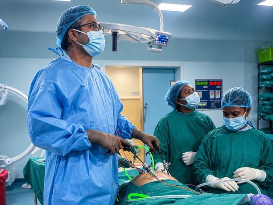
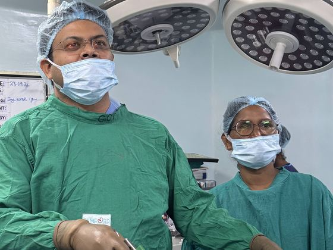
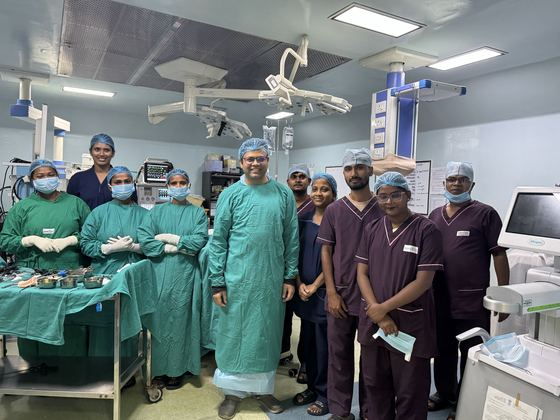
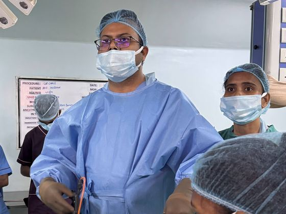
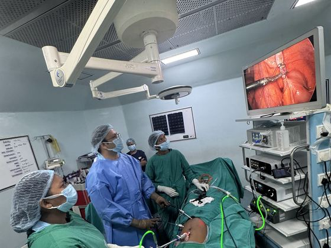
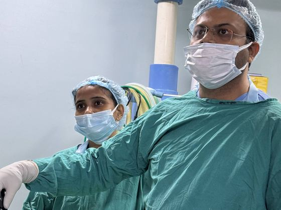
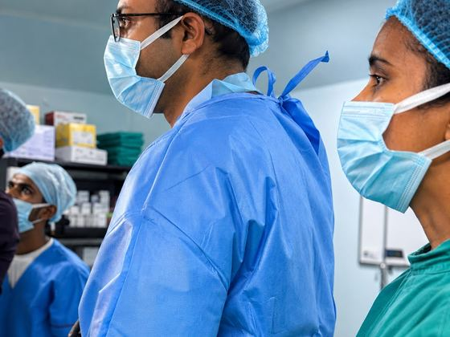
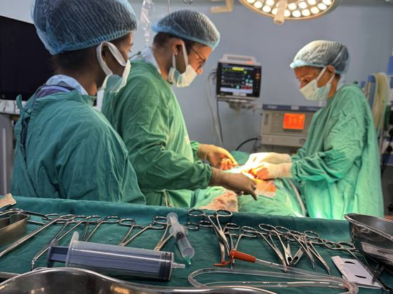
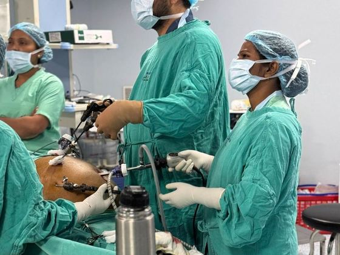
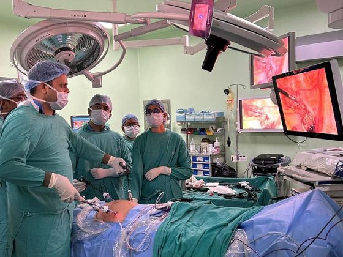
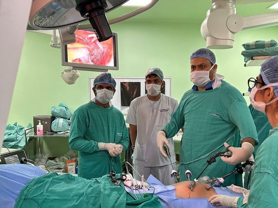
Professional milestones
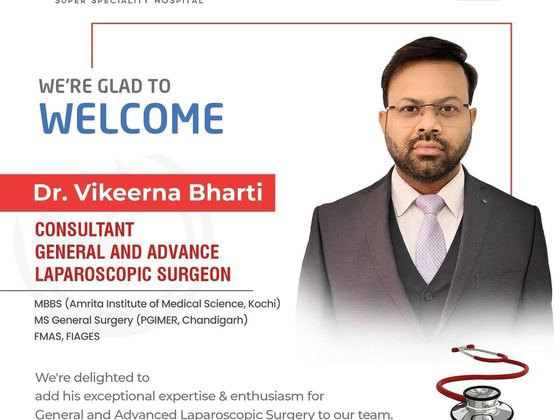
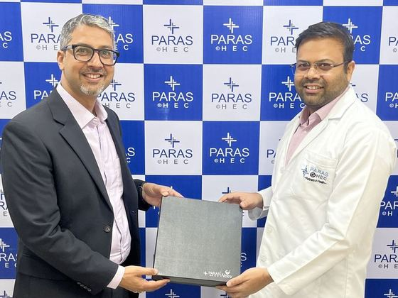
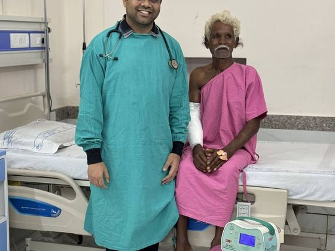
Our clinics and hospital facilities


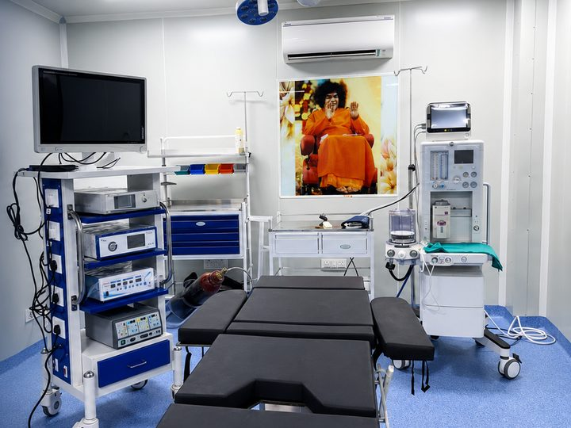
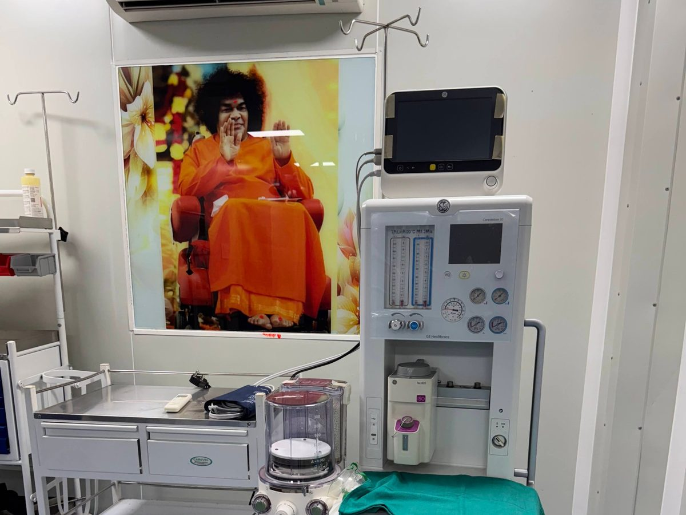
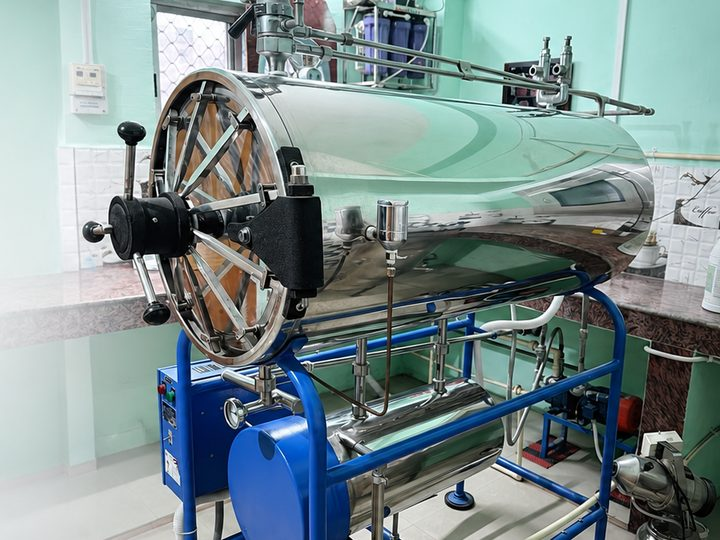
In the news and in the community
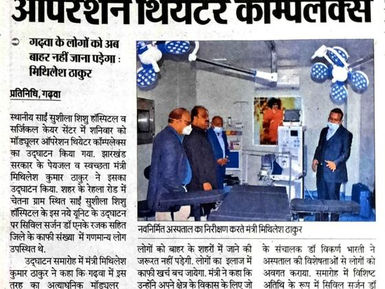
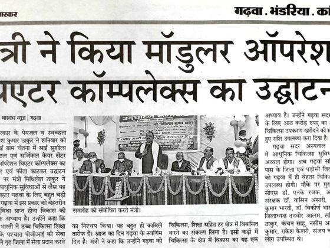
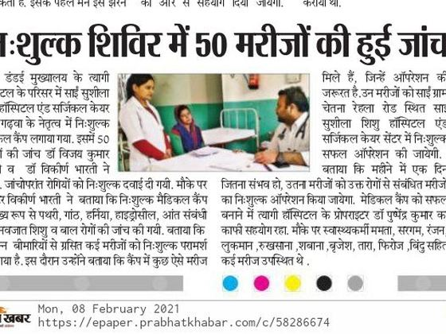
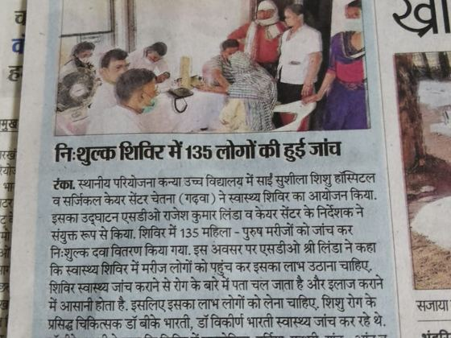
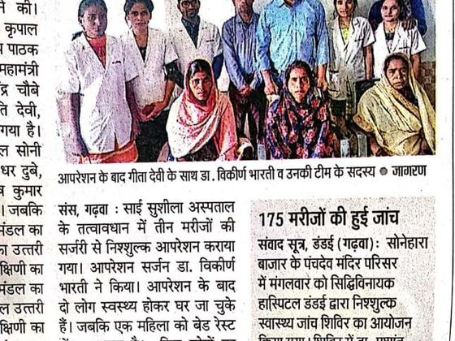
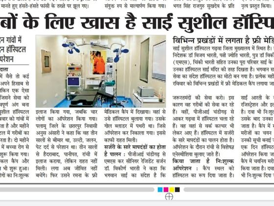
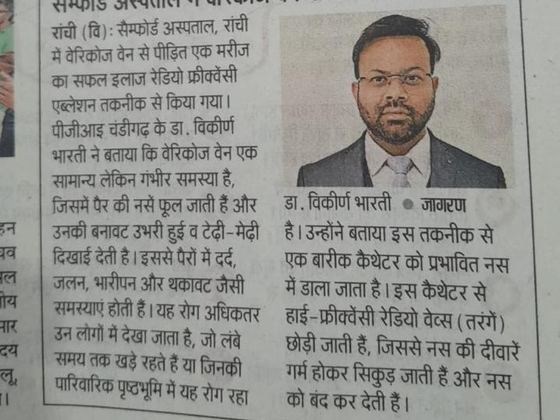
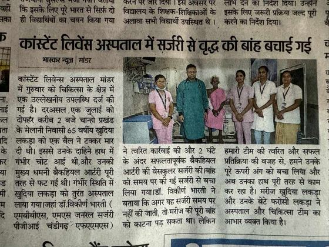
Photographs that include patients are shared with their written consent. Newspaper reports are shown as published and describe past events; they do not predict an individual patient’s result.
Plan an in-person consultation
Bring your available reports, prescriptions and questions. You can attend the Ranchi OPDs during the listed hours. For Garhwa, check the visiting date before travelling.